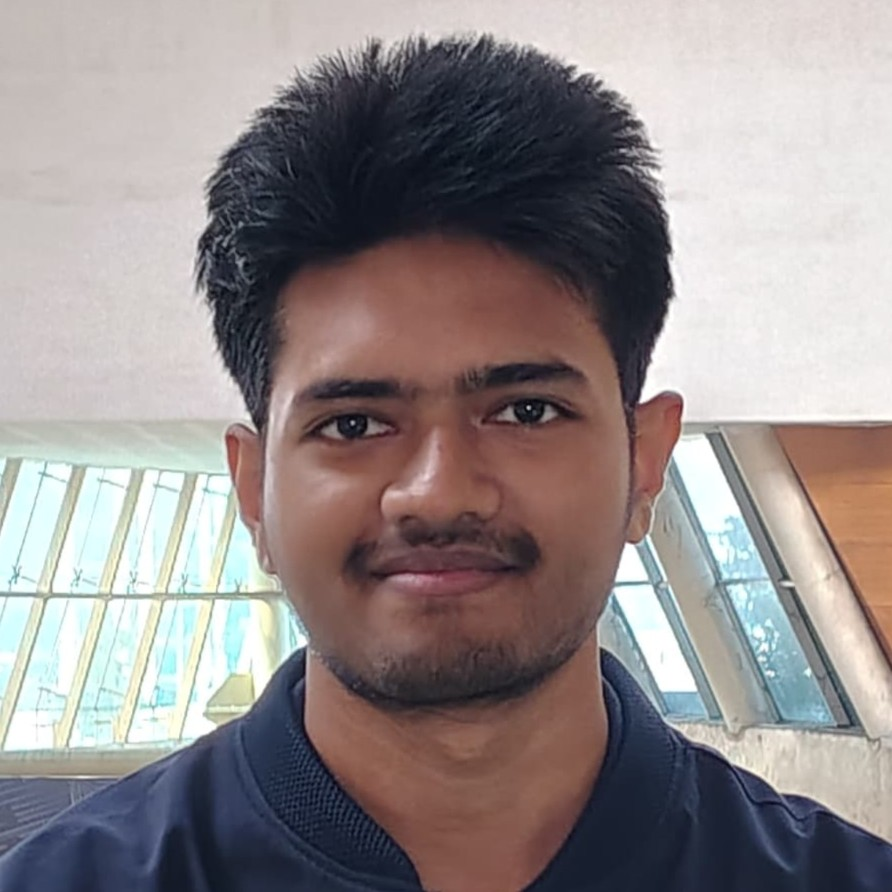
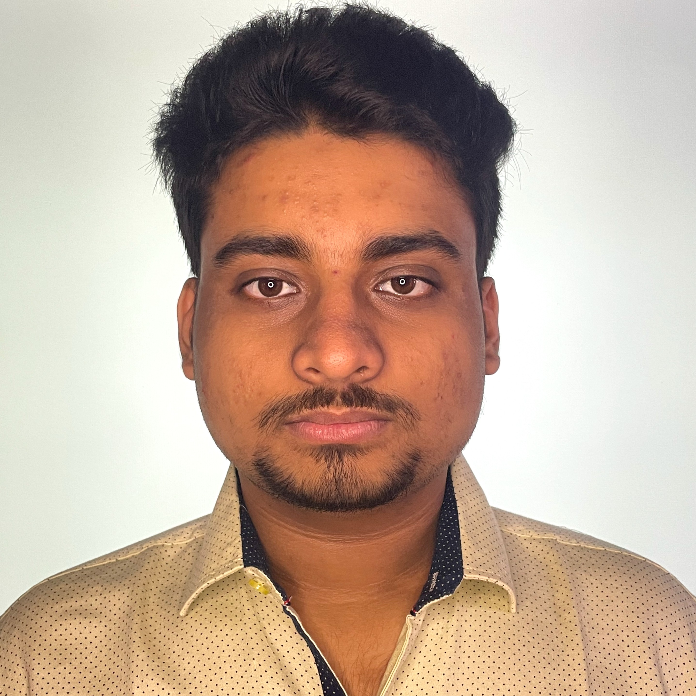
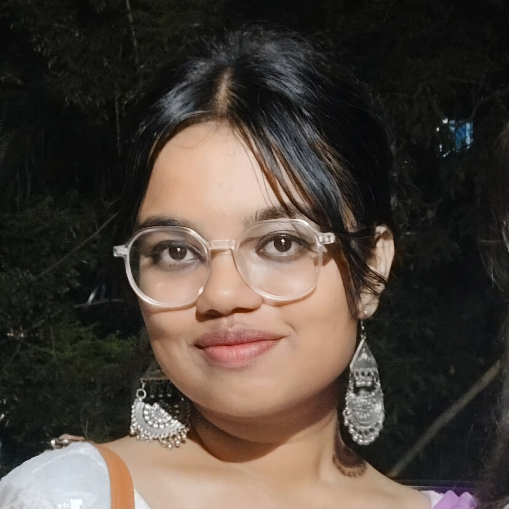
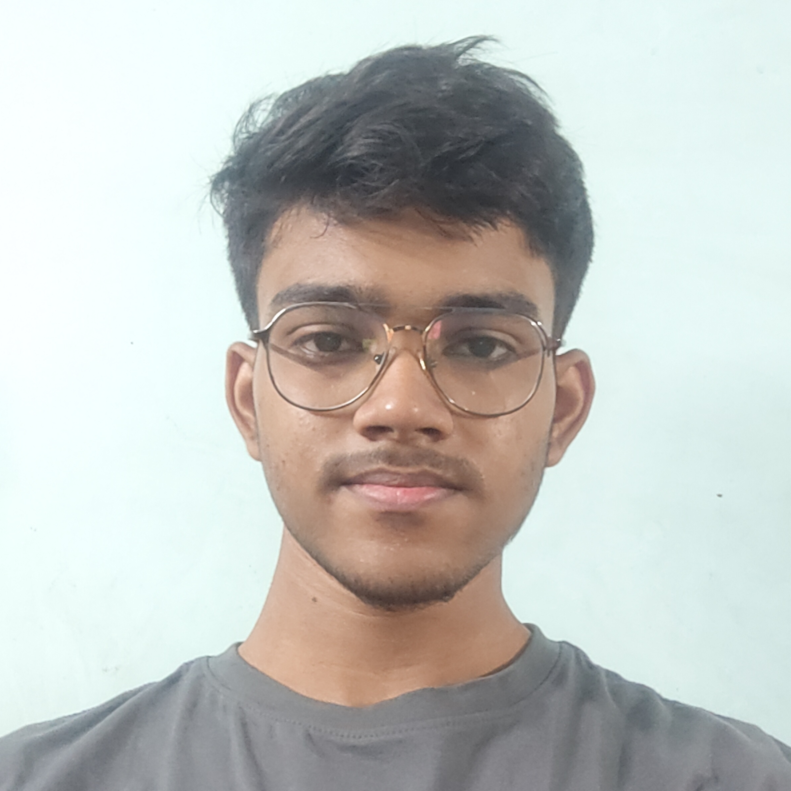
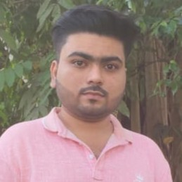

About Us
Meet the team behind Scamurai

Md Atiq Niraj Rahaman
Team Lead
MSIT CSE '28

Sourik Majumdar
Team Member
MSIT CSE '28

Ankana Debnath
Team Member
MSIT CSE '28

Aditya Kiran Modak
Team Member
MSIT CSE '28

Atrik Mondal
Team Member
MSIT CSE '28
Our Journey
As first year students at MSIT Kolkata, we embarked on this project with a shared vision to combat cyber fraud. The idea for "Scamurai" was born during our continuous reserch and team discussion for HackFest, where we realized the growing need for public awareness.
Developing this platform challenged us to:
- Implement complex fraud detection algorithms
- Design intuitive user interfaces
- Stay updated with evolving scam techniques
- Balance academic commitments with project development
Our late-night coding sessions, heated debates about security protocols, and breakthroughs in AI integration have shaped Scamurai. We're proud to contribute to the fight against cybercrime while performing all our academic studies.